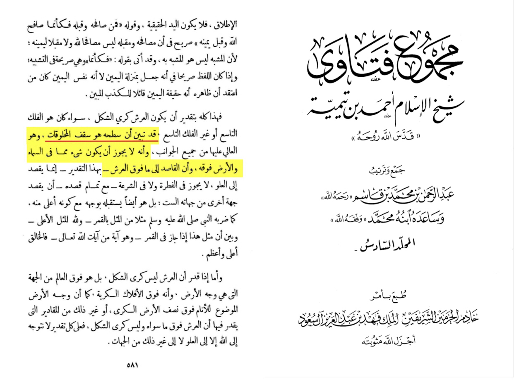
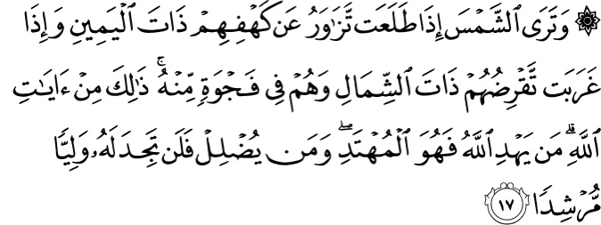

Let’s start refuting in Islam the Throne of Allah is the top of all creation with consensus as in Majmu' al-Fatawa 6/581.
So everything is prostrating normally but how do they do it?
The Quran 17:44 answers that:
The seven heavens, the earth, and all those in them glorify Him. There is not a single thing that does not glorify His
praises—but you ˹simply˺ cannot comprehend their glorification. He is indeed Most Forbearing, All-Forgiving.
Is there an objection of it doing it in its place?
Al-Bayhaqi already answered this where he said there is no objection for it.
Now what does the ending point mean?
According to Tafsir Ibn Kathir Qur'an 36:38, it means:
..on its fixed course for a term (appointed). ...
(The first view) is that it refers to its fixed course of location, which is beneath the Throne, beyond the earth in that
direction. Wherever it goes, it is beneath the Throne, it and all of creation, because the Throne is the roof of creation
and it is not a sphere as many astronomers claim.
And this is scientifically correct and there is another scientific fact in the verse that the sun swims i.e runs
confirmed by NASA.
Source: https://starchild.gsfc.nasa.gov/docs/StarChild/questions/question18.html
How could the Prophet know this (ain’t saying this 100% means Islam is true)?
Qur'an 53:3-4 answers that:
Nor does he speak of his own whims.
It is only a revelation sent down ˹to him˺.

OTHER ARGUMENTS THAT ARE BROUGHT UP:
➢ Sun’s Rotation around the Earth
➢ Movement of the Sun
➢ Prostration of the Sun
1. Sun's Rotation around the Earth:
The first criticism is the claim that the hadith somehow suggests that the Sun is rotating around the Earth (geocentric),
whereas in reality, it is the Earth that is orbiting around the Sun (heliocentric) and on its own axis that gives us the
impression of Sunset and Sunrise. This contention can easily be resolved by pointing out that the Prophet Muhammad (PBUH)
here is speaking in the context of how things appear to be from Earth, not how as they really exist. A Resident of this planet
observes the Sun moving from Sunrise to Sunset and not the earth. The astronomical term used for this phenomenon is called
"Diurnal Motion.
This is no different than how the rest of the world uses the terms Sunset and Sunrise. Even NASA uses such terms.
When the day ends, we say the Sun has set, and when the day begins, we say the Sun has risen. To be more accurate,
shouldn’t we say “Sunlight has moved away from our location” or “Sunlight has come upon our location”? However,
we universally use the terms Sunrise, Sunset, and statements like the Sun has risen, the Sun has set, etc.
because this is how the Sun appears to us here on earth. Therefore, the Prophet Muhammad (PBUH) is trying describe the same
phenomenon to a 7th century Arab in words that he will understand because the sun moving is what appears to him from the Earth.
In the Qur’an, Allah uses similar wording to describe Sunrise and Sunset in the story about the people of the cave.
The Qur’an is conversing with mankind who live on earth, therefore, it uses concepts that they are familiar with:
↓

Translation:
And [had you been present], you would see the sun when it rose, inclining away from their cave on the right,
and when it set, passing away from them on the left, while they were [laying] within an open space thereof.
That was from the signs of Allah. He whom Allah guides is the [rightly] guided, but he whom He leaves astray –
never will you find for him a protecting guide.
—[Qur’an 18:17]
In addition, it is important to note that the heliocentric model is accepted not because we’ve made direct observations of the
earth literally going around the sun but because it better predicts (https://www.youtube.com/watch?v=UtOEnTiAZlU)
the motions of the celestial objects. It just fits the data (https://www.youtube.com/watch?v=ZGr1nHdzLyk)
that we have observed much better and in a more precise manner. That’s all there is to it.
Modern science is confident that this heliocentric theory is the correct one because it makes the collected data simpler to
explain (https://www.wired.com/story/earth-orbits-the-sun-physics/ )
than the geocentric theory. Some people erroneously think that you can go into space just outside of the earth’s orbit and
actually observe the earth going around the sun.
2. Movement of the sun
The second criticism (which is already answered above but just got a bit more in details) leveled against this hadith is that
it suggests that the sun is moving, whereas, it is the earth that is moving. This too deserves the same reply as in the
previous section, however, it should also be noted that the sun is not still. According to modern science, the sun is
moving at a very fast pace through the Milky Way Galaxy and it is taking us along with it.
This moving of the sun is stated explicitly (https://starchild.gsfc.nasa.gov/docs/StarChild/questions/question18.html )
on NASA’s own website. In fact, our whole solar system is moving
(https://www.forbes.com/sites/startswithabang/2018/08/30/our-motion-through-space-isnt-a-vortex-but-something-far-more-interesting/#1095ee647ec2 )
through the galaxy. Therefore, the critique of the very movement of the sun being problematic should be rejected.
This phenomenon of our whole solar system on a move is in complete harmony with a verse in the Qur’an where Allah says:
It is not allowable for the sun to reach the moon, nor does the night overtake the day, but each, in an orbit, is swimming. [Qur’an 36:40]
3. Prostration of the sun
Brother Yehia also answered it but here is more:
Al-Khattaabi (may Allah have mercy on him) said:
“It cannot be denied that it halts beneath the Throne, in a manner that we cannot see or comprehend; rather this is speaking about a matter of the unseen.
So we should not disbelieve in it or ask how it happens, because our knowledge cannot comprehend it.” -
quote from A‘laam al-Hadeeth Sharh Saheeh al-Bukhaari (p. 1893)
Shaykh al-Islam Ibn Taymiyah (may Allaah have mercy on him) said:
“Prostration is a form of humility, so the prostration which includes all creatures implies the utmost submission
and humility. For every created thing submits to His greatness and humbles itself before His might and power.
This does not mean that everything prostrates like human beings do, on seven parts of the body, putting the forehead on
the ground. This kind of prostration is only for human beings. Some other nations bow but do not prostrate,
and that is their prostration… Sujood (prostration) is a generic term but because the way in which Muslims prostrate
is so well known, many people think that this is how everything prostrates. “ - Jaami’ al-Rasaa’il, 1/27